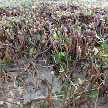
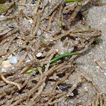
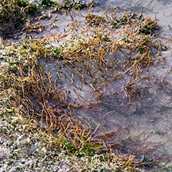

|
|
| worms text index | photo index |
|
worms > Phylum Annelida >
Class Polychaeta
|
| Gregarious
tubeworm awaiting identification* updated Oct 2016 Where seen? This worm is commonly seen on sand bars at the low water mark and on stones on the mid water mark, usually near seagrasses. The thin tubes of large numbers of the worm form shaggy rugs that people often overlook and simply step on! Features: The tubes are thin, 1-2mm in diameter. The thin, brown tubes are often mistaken for seagrass roots or stems. Densely packed together, the tubes look like a hairy rug left on the shore. Sometimes, a colony can cover several metres. The actual animals are thin and long, thus described as thread-like. What does it eat? It is a deposit feeder, eating sediments and digesting the organic, edible bits. Role in the habitat: The worms and their tubes might play a role in keeping sediments down and creating mounds that trap pools of water at low tide for small creatures to shelter in. Seagrasses and seaweeds often grow among the mat of tubes. |
|
 Cyrene Reef, Mar 07 |
 |
 Chek Jawa, Jan 06 |
*Species are difficult to positively identify without close examination.
On this website, they are grouped by external features for convenience of display.
| Gregarious tubeworms on Singapore shores |
On wildsingapore
flickr
|
| Acknowledgement With grateful thanks to Leslie H. Harris of the Natural History Museum of Los Angeles County for comments about these worms. |